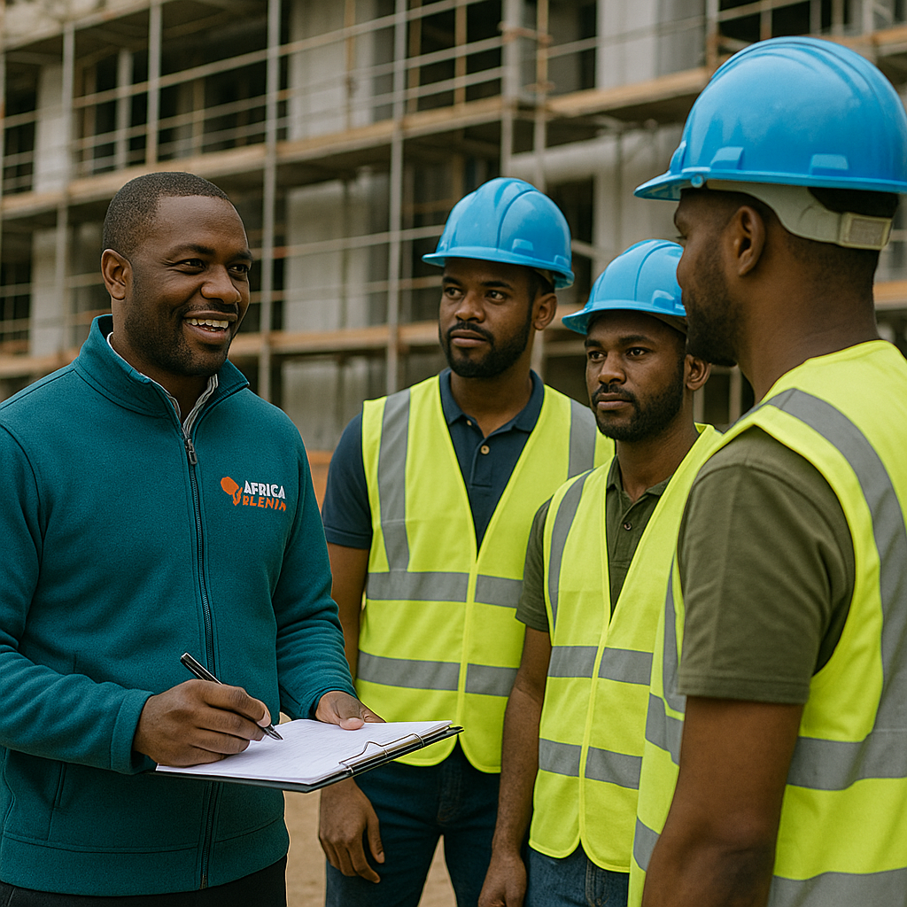

A África Recruita é mais do que uma agência de recrutamento. Somos uma ponte entre sonhos e oportunidades. Com presença em Moçambique e África do Sul, ajudamos milhares de africanos a encontrar empregos dignos, honestos e com segurança.
Nosso diferencial? Ética, combate à falsificação, uso de tecnologia moderna e respeito pelo talento africano.
Who We Are
África Recruita is more than a recruitment agency. We are a bridge between dreams and opportunities. Based in Mozambique and South Africa, we help thousands of Africans find honest, secure, and dignified employment.
What sets us apart? Ethics, anti-fraud commitment, modern technology, and respect for African talent.
O que Oferecemos
Recrutamento nacional e internacional
Serviços domésticos confiáveis e verificados
Consultoria em RH para empresas
Suporte com legalização de documentos
Triagem automática com inteligência artificial
What We Offer
National and international recruitment
Verified and trusted domestic services
HR consulting for businesses
Assistance with document legalization
AI-powered resume screening
Experiências Reais
"Consegui meu emprego de sonho em Joanesburgo graças à África Recruita!" – Ana L.
"Foram muito rápidos e profissionais. Obrigado!" – Marcos F.
Real Experiences
"I got my dream job in Johannesburg thanks to África Recruita!" – Ana L.
"They were very fast and professional. Thank you!" – Marcos F.
Veja o Nosso Trabalho
See Our Work

Empregos para todosJobs for allRecrutamento ÉticoEthical RecruitmentSucesso AfricanoAfrican Success
Vagas Disponíveis
Candidate-se agora via WhatsApp. Vagas atualizadas:
AfriInvestimento - Oportunidade de Crescimento Financeiro
AfriInvestimento é uma plataforma inovadora que oferece a você a chance de multiplicar seu capital com baixo risco e altos retornos.
**Transforme 500 MZN em até 10.000 MZN** em poucas semanas! Com uma estratégia cuidadosamente estruturada, a AfriInvestimento é a oportunidade ideal para quem deseja crescer financeiramente sem complicação. Com total transparência, segurança e monitoramento constante, você pode ver seu investimento prosperar rapidamente.
Por que investir no AfriInvestimento?
Baixo risco, alto retorno: Ao investir apenas 500 MZN, você tem a chance de obter um retorno significativo em um curto espaço de tempo.
Oportunidade de multiplicação rápida: Ganhos de até 10.000 MZN em semanas, sem necessidade de conhecimentos avançados sobre investimentos.
Modelo simples e eficiente: O investimento é fácil de entender, e o processo de inscrição é rápido e acessível a todos.
Segurança e confiança: Protegemos todas as suas transações e oferecemos suporte completo para que você tenha uma experiência tranquila e segura.
Investimento acessível: Você não precisa de grandes quantias para começar. Com apenas 500 MZN, você já começa a multiplicar seu capital.
**Oportunidade de Crescimento Acelerado**:
Expansão rápida do seu capital: Ao convidar amigos para se juntar à plataforma, seus ganhos podem aumentar ainda mais, criando uma rede de investidores.
Investimento inteligente: A AfriInvestimento faz parte de um movimento crescente de diversificação de investimentos, especialmente em mercados emergentes como o de Moçambique, onde as oportunidades estão em alta.
Simulações de Investimento: Se você investir 500 MZN hoje, dentro de 2 semanas, você pode ter retornos de até 2.500 MZN. Em 6 semanas, esse valor pode chegar a até 10.000 MZN, dependendo da sua rede e envolvimento.
**Benefícios Exclusivos para Investidores**:
Acesso a relatórios detalhados sobre seu desempenho e transparência total nas operações.
Suporte dedicado para tirar dúvidas e ajudar a otimizar seus ganhos.
Promoções exclusivas para investidores ativos.
Como Funciona:
Invista apenas 500 MZN.
Observe seu investimento crescer conforme a plataforma gera retornos para você.
Convide amigos para aumentar sua rede e acelere seus lucros.
Acompanhe de perto o desempenho da sua conta e aproveite os relatórios de progresso.
**Segurança Garantida**:
A plataforma utiliza os mais altos padrões de segurança para proteger todas as transações financeiras e dados pessoais.
Monitoramento constante das operações para garantir que todas as atividades estejam dentro da legalidade e da ética.
Acompanhamento contínuo de todas as fases do processo de investimento, garantindo que você saiba exatamente onde está investindo.
**Invista com confiança**: Clique na aba "Inscrição" para começar a sua jornada de investimento com apenas 500 MZN. Comece a ver seu capital crescer de forma segura e transparente!
AfriInvestment - Your Financial Growth Opportunity
AfriInvestment is an innovative platform that gives you the chance to multiply your capital with low risk and high returns.
**Turn 500 MZN into up to 10,000 MZN** in just a few weeks! With a carefully structured strategy, AfriInvestment is the ideal opportunity for those who want to grow financially without complications. With full transparency, security, and constant monitoring, you can watch your investment thrive quickly.
Why Invest in AfriInvestment?
Low risk, high return: By investing only 500 MZN, you have the chance to achieve a significant return in a short period of time.
Quick multiplication opportunity: Earn up to 10,000 MZN in weeks, with no advanced investment knowledge required.
Simple and effective model: The investment is easy to understand, and the registration process is fast and accessible to everyone.
Security and trust: We protect all your transactions and provide full support for a smooth and secure experience.
Accessible investment: You don’t need large amounts to start. With just 500 MZN, you begin multiplying your capital.
**Accelerated Growth Opportunity**:
Rapid capital growth: By inviting friends to join the platform, your earnings can increase even more, creating a network of investors.
Smart investment: AfriInvestment is part of a growing movement to diversify investments, especially in emerging markets like Mozambique, where opportunities are booming.
Investment Simulations: If you invest 500 MZN today, within 2 weeks, you could see returns of up to 2,500 MZN. In 6 weeks, this could reach up to 10,000 MZN, depending on your network and involvement.
**Exclusive Benefits for Investors**:
Access to detailed reports on your performance and full transparency in operations.
Dedicated support to answer questions and help optimize your earnings.
Exclusive promotions for active investors.
How It Works:
Invest just 500 MZN.
Watch your investment grow as the platform generates returns for you.
Invite friends to expand your network and accelerate your profits.
Track your account performance closely and take advantage of progress reports.
**Guaranteed Security**:
The platform uses the highest security standards to protect all financial transactions and personal data.
Constant monitoring of operations to ensure all activities are legal and ethical.
Continuous tracking of all stages of the investment process to ensure you know exactly where your money is going.
**Invest with confidence**: Click on the "Registration" tab to begin your investment journey with just 500 MZN. Start seeing your capital grow securely and transparently!
Fale Connosco